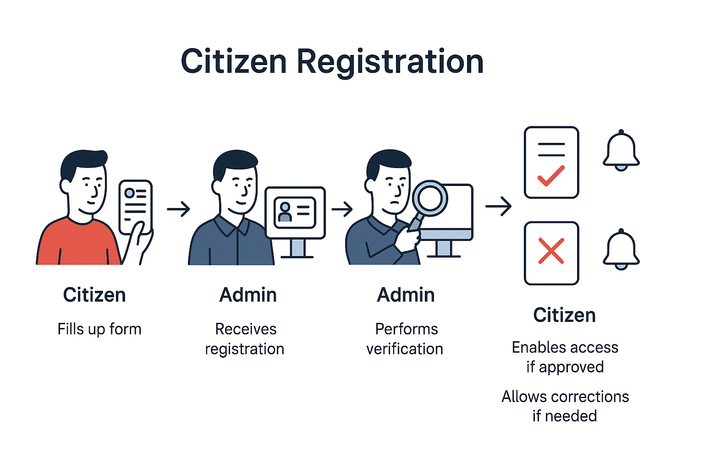
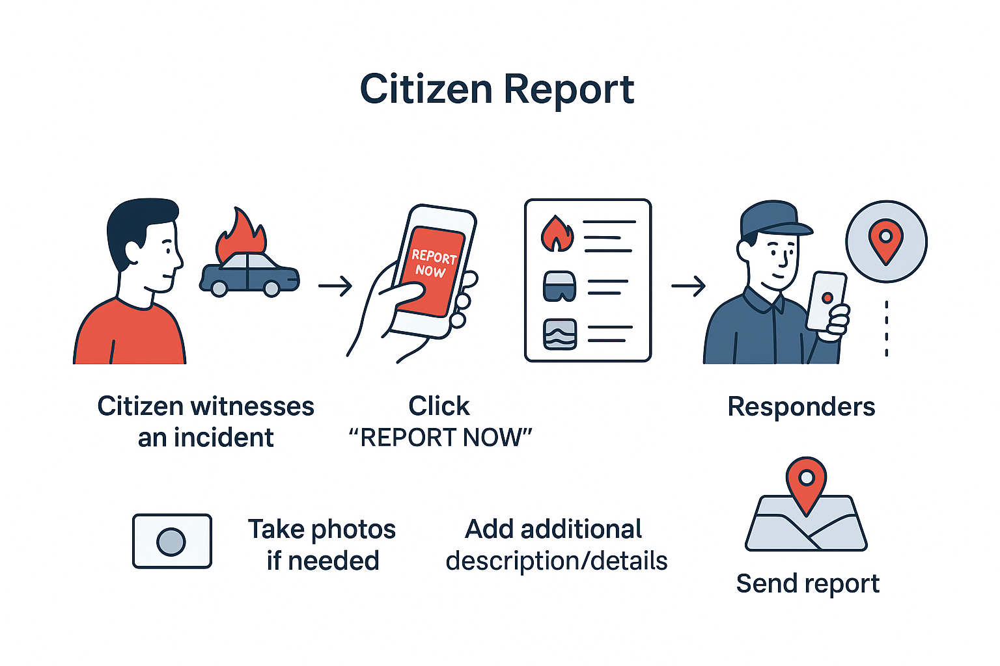
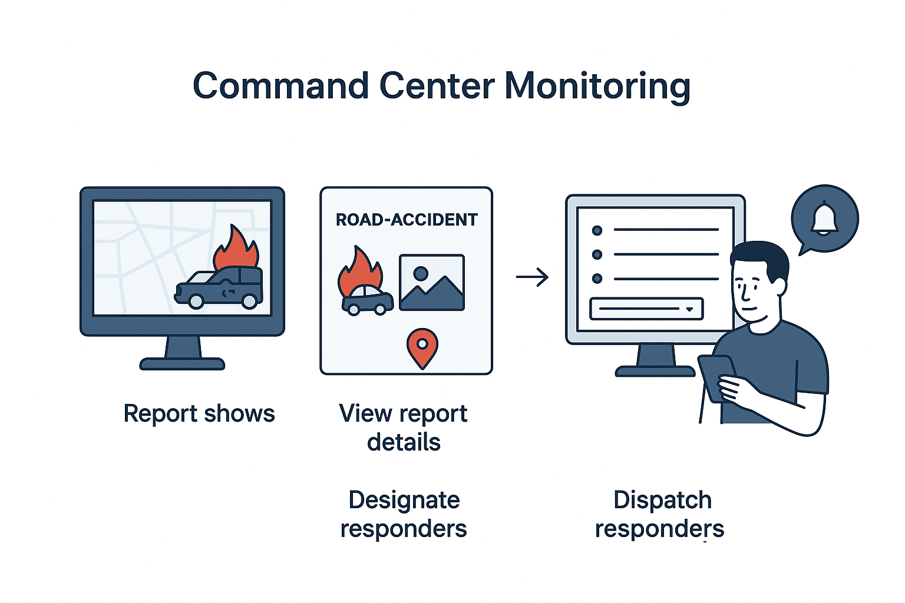
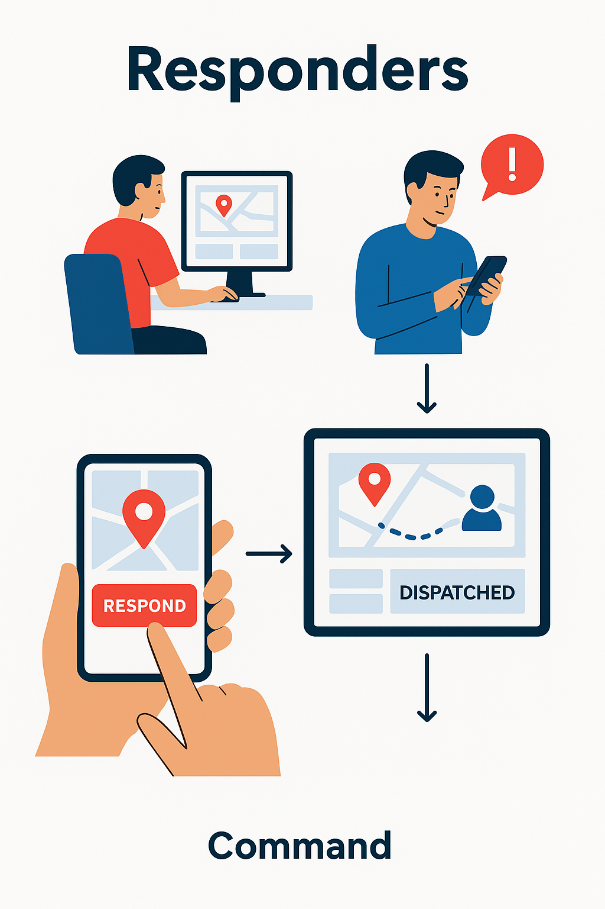
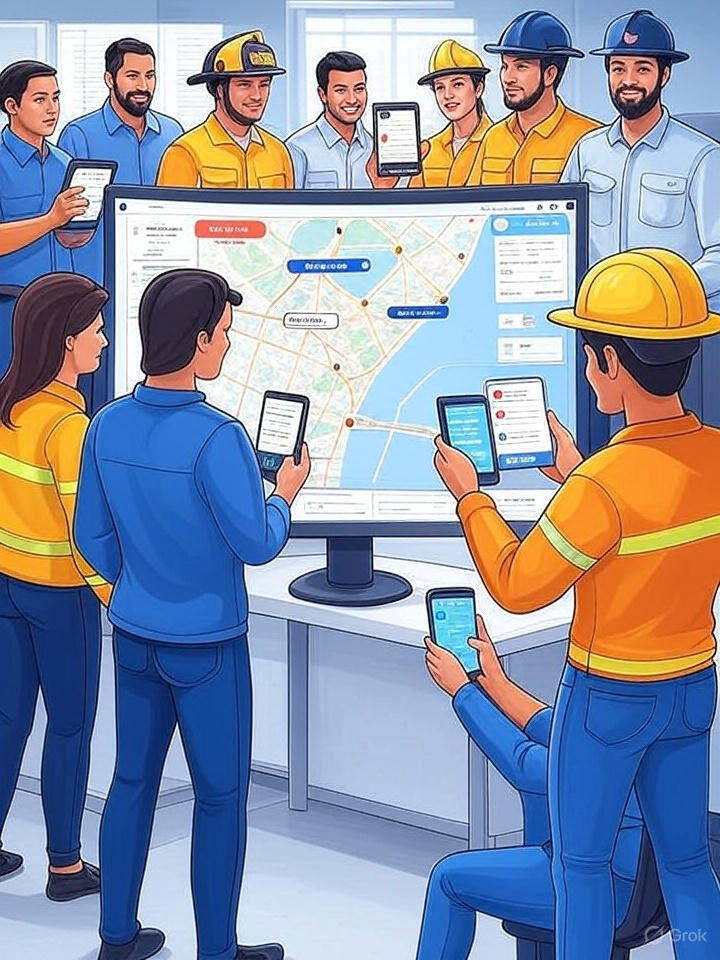

View a more detailed version here
Mobile App Overview
Initially launching on Android with a native app for optimal performance, and extending to iOS after. A mobile web-app alternative will be available for non-Android users.
Citizen Role & Features
Registration
- Upload government ID for verification
- Privacy policy link and data encryption

Report
- "Report Now" button for emergencies
- Select tags (Fire, Road Accident, etc.) or add custom
- Optional photo capture and description
- Map confirmation for incident location
- Receive real-time status updates

Alerts
- Minor advisories (weather, traffic, health)
- Moderate alerts (flood watch, fire prevention)
- Urgent alerts (flash floods, earthquakes, evacuation orders)
Medical Profile
- Optional medical history for quick reference
- Profile: age, blood type, allergies
- History, medications, vaccinations
Command Dashboard
- Web-based, accessible on any device, but intended for larger monitors
- Incident map with severity markers
- Incident management and archiving
- Entity administration (departments, responders, vehicles, other users)
- Manage Citizen verification

View example map with three responder vehicles
Responder Role & Features
- Departments: DRRMO, Fire, Police, Hospital, Barangay
- Respond button triggers dispatch tracking
- Real-time location monitoring
- Progress notifications to relevant parties
- Schedules: set duty availability


Data Privacy & Security
- Database & application-level encryption
- Compliance with DPA 2012
- Clear policies on collection, usage, retention, and user rights